Guía práctica de la interfaz, con capturas reales de cada pantalla (con datos inventados): cómo elegir archivos y carpetas, cómo seguir el progreso de un lote, dónde se guarda el documento anonimizado, cómo decidir sobre posibles homónimos y cómo revertir un código cuando haga falta consultar la identidad real.
Menú Inicio de Windows → Anonimizador jurídico (versión de la Microsoft Store) o Anonimizador de expedientes jurídicos (instalador clásico; también el acceso del escritorio, si lo creaste).
El programa se abre en una ventana de escritorio propia, no en el navegador; para cerrarlo, cierra esa ventana. Por dentro funciona como un servidor local al que solo se puede acceder desde este mismo ordenador (127.0.0.1), nunca desde fuera. (Si a Windows le falta el componente WebView2, el programa ofrece abrirse en el navegador.)
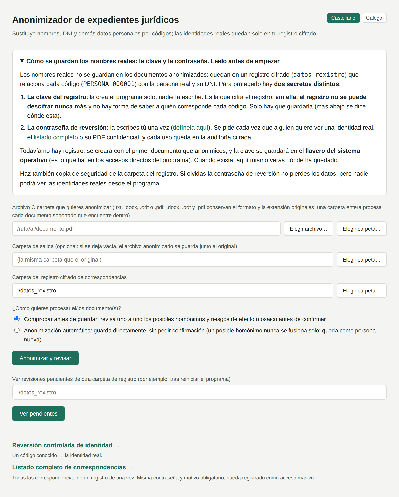
Los botones «Castellano | Galego» de la pantalla inicial cambian el idioma de todo el programa, y la elección se recuerda al cerrarlo. El idioma decide también cómo se escriben los códigos en los documentos anonimizados: PERSONA_000001, [DIRECCIÓN]… en castellano y PERSOA_000001, [ENDEREZO]… en gallego. La misma persona lleva el mismo número en los dos idiomas, y un código se puede revertir escrito de cualquiera de las dos formas.
Elige el archivo o la carpeta (o escribe su ruta)
El botón «Elegir archivo…» abre el diálogo nativo del sistema (el Explorador de Windows). El botón «Elegir carpeta…» abre el explorador de carpetas del propio programa (ver sección 03). También puedes escribir o pegar la ruta directamente en el campo.
Carpeta de salida (opcional)
Si la dejas vacía, el archivo anonimizado se guarda junto al original. Si quieres que vaya a otro sitio (por ejemplo, una carpeta distinta para entregar), indícalo aquí con su propio botón «Elegir carpeta…».
Indica la carpeta del registro
Por defecto ./datos_rexistro. Es la carpeta donde queda guardada, cifrada, la correspondencia entre cada código y la persona real. Usa siempre la MISMA carpeta para todos los documentos de un mismo caso: así los códigos son coherentes entre ellos. En Windows, la carpeta por defecto es Documentos\Anonimizador\datos_rexistro en la versión de la Microsoft Store y %LOCALAPPDATA%\Anonimizador\datos_rexistro con el instalador clásico (sección 13).
Elige cómo procesar y pulsa el botón
«Comprobar antes de guardar» (botón «Anonimizar y revisar») o «Anonimización automática» (ver sección 04). Al pulsarlo aparece la pantalla de progreso (sección 05) y, cuando termina, la pantalla de revisión (o el resultado, en modo automático).
La carpeta del registro (datos_rexistro o el nombre que le hayas dado) contiene clave.key (o nada, si usas el llavero del sistema, que es lo normal), rexistro.enc y auditoria.enc.
NO LA BORRES NI LA MUEVAS mientras sigas trabajando con el mismo caso: es la única forma de mantener los códigos coherentes y de poder revertir un código en el futuro.
Al pulsar cualquier botón «Elegir carpeta…» (el del documento, el de salida o el del registro) se abre el explorador del propio programa. A diferencia del diálogo nativo del sistema, que solo muestra carpetas, este muestra también los archivos que hay dentro, para que puedas reconocer la carpeta correcta antes de elegirla.
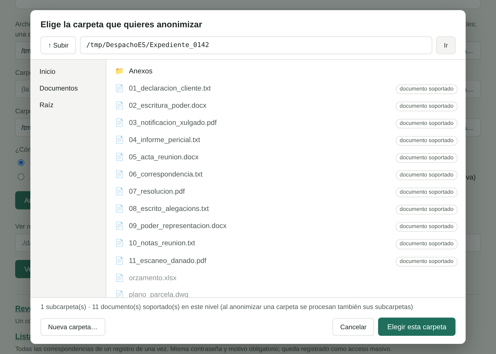
.txt, .docx, .odt, .pdf e imágenes como .jpg, .png o .tif) llevan la etiqueta «documento soportado». Los archivos y carpetas ocultos no se muestran.El explorador solo lista el contenido de las carpetas: nunca lee, mueve ni borra archivos.
Antes de pulsar el botón, elige cómo quieres que se procese el documento (o la carpeta entera). «Comprobar antes de guardar» es el comportamiento ya visto: revisas las personas detectadas, las posibles fugas y los riesgos antes de confirmar (secciones 07 y 08). La opción «Anonimización automática» guarda directamente, sin esperar tu confirmación:
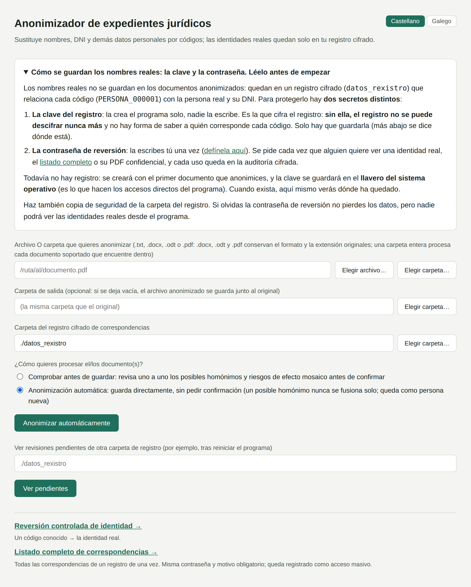
No se crea ninguna revisión pendiente: el archivo final se guarda inmediatamente, con la misma regla de nombres y formato de la sección 08.
Un posible homónimo recibe siempre su propio código, igual que en la revisión (sección 07): si el sistema encuentra el mismo nombre en otro documento sin DNI que lo confirme, lo trata como una persona distinta.
Los riesgos de efecto mosaico no se corrigen automáticamente en ninguno de los dos modos: siguen haciendo falta ojos humanos para generalizar un dato, y el modo automático no puede hacerlo por ti.
Cada documento del resultado tiene el botón «Revisar este documento», que abre su revisión con los mismos códigos (lo revisado sustituye a lo guardado). Úsalo para tapar lo que se haya escapado antes de entregar el documento.
Cuándo usar cada modo. Comprobar antes de guardar: recomendado siempre que el documento se vaya a entregar o publicar, porque permite tapar lo que se escape y destapar lo que no es una persona. Anonimización automática: útil para lotes grandes, revisando después los documentos que el resumen marque con posibles fugas.
Al pulsar el botón, en cualquiera de los dos modos y tanto con un archivo como con una carpeta entera, la pantalla inicial da paso a una pantalla de progreso que muestra en cada momento cómo va el trabajo:
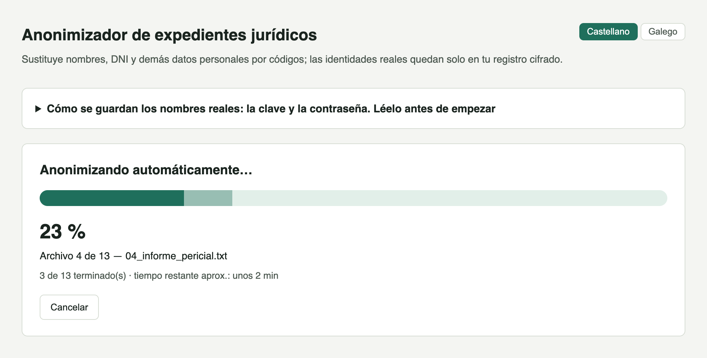
Un archivo dañado (por ejemplo, un PDF que no se puede abrir) no detiene el lote: el programa sigue con el resto y, al final, lista los fallos junto con el motivo. En el modo automático, el resultado es este:
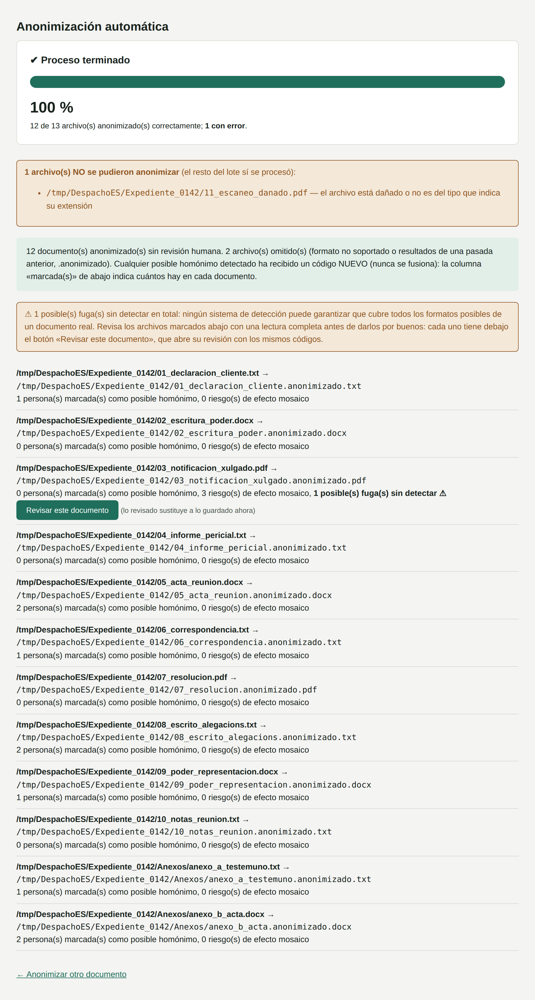
Cuando el proceso tiene más de un archivo (una carpeta), aparece un botón «Cancelar» debajo de la barra. Al pulsarlo, el botón pasa a «Cancelando…»: el programa termina el archivo que tiene entre manos (un archivo no se puede dejar a medias) y no empieza ninguno más. Lo que ya estaba hecho queda hecho y lo que no se procesó no se toca. Un archivo suelto no tiene botón de cancelar, porque se procesa de una vez.
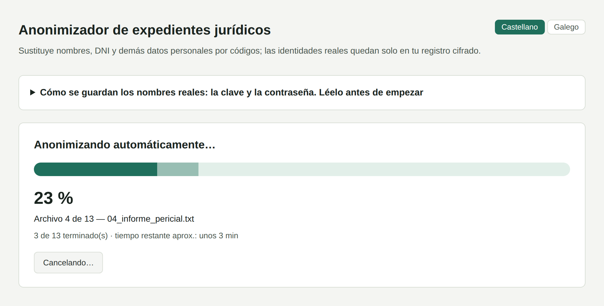
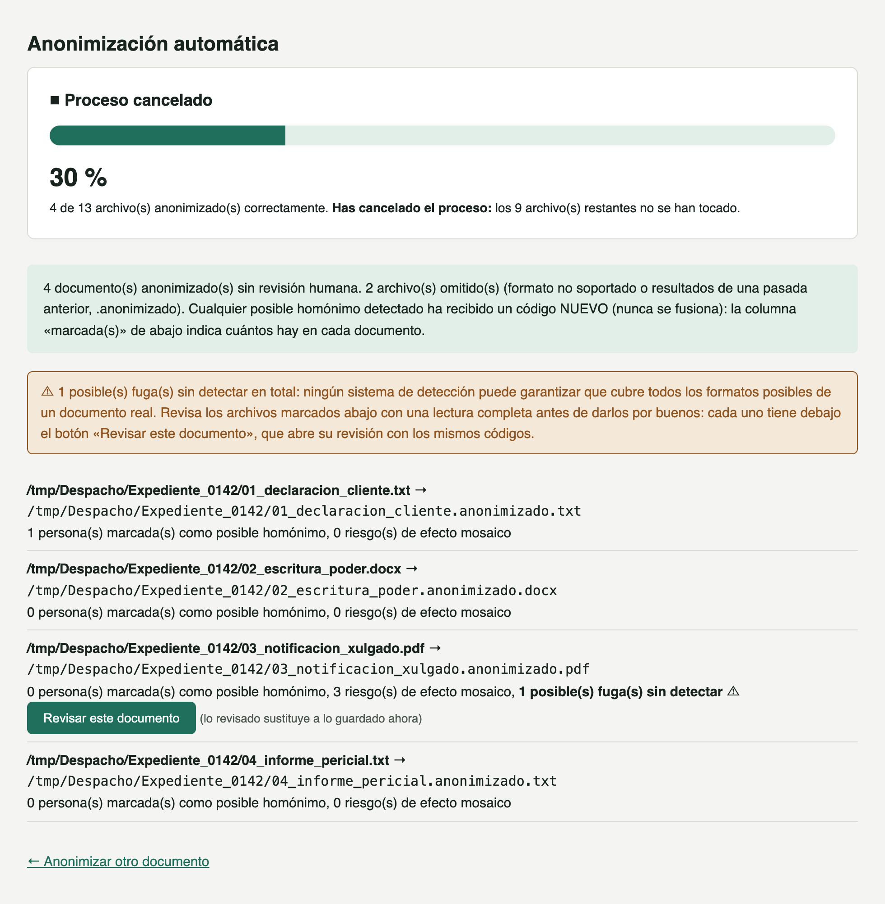
El mensaje final dice «Has cancelado el proceso: los K archivo(s) restantes no se han tocado» (modo automático) o «Proceso cancelado: N de M archivo(s) procesado(s) (pendientes de revisión más abajo); el resto no se ha tocado» (modo revisión).
En lugar de un archivo suelto, el mismo campo acepta una CARPETA: se procesa automáticamente cada documento soportado (.txt, .docx, .odt, .pdf e imágenes) que encuentre dentro, buscando también en las subcarpetas. En modo revisión se crea una revisión propia para CADA documento: nunca se guarda nada en bloque sin revisar antes.
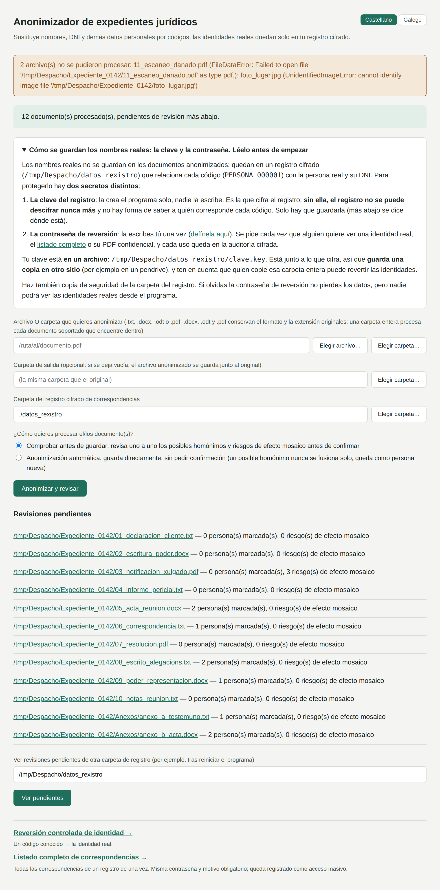
Los archivos de un formato no soportado (planos, hojas de cálculo…) quedan fuera y se cuentan como «omitidos»: nunca se incluyen ni se modifican. Revisa cada revisión pendiente de la lista una a una, exactamente igual que si procesaras los documentos por separado.
Si procesas de nuevo una carpeta donde ya guardaste resultados de una pasada anterior (archivos nombre.anonimizado.pdf, .docx, .odt o .txt), esos archivos no se vuelven a anonimizar: cuentan como «omitidos» en el resumen. Si quieres tener los resultados separados de los originales, indica una «Carpeta de salida» (sección 02).
La pantalla de revisión muestra, de arriba abajo: las posibles fugas sin detectar (solo si las hay), las personas no anonimizadas por cargo público, los posibles homónimos, los riesgos de efecto mosaico, los datos de categoría especial, la lista de personas detectadas y el cuadro «Añadir o generalizar».
El texto no se edita a mano: el documento final se genera siempre desde el original más tus decisiones, y por eso conserva siempre su formato (PDF, Word…). Al final hay una vista previa del texto anonimizado, solo para consulta.
Cuando un documento menciona un nombre que ya está en el registro sin un DNI que confirme que es la misma persona, el sistema le da un código NUEVO y lo avisa. En el ejemplo, el acta nombra a dos personas sin DNI que ya aparecieron (con DNI) en otro documento del expediente:
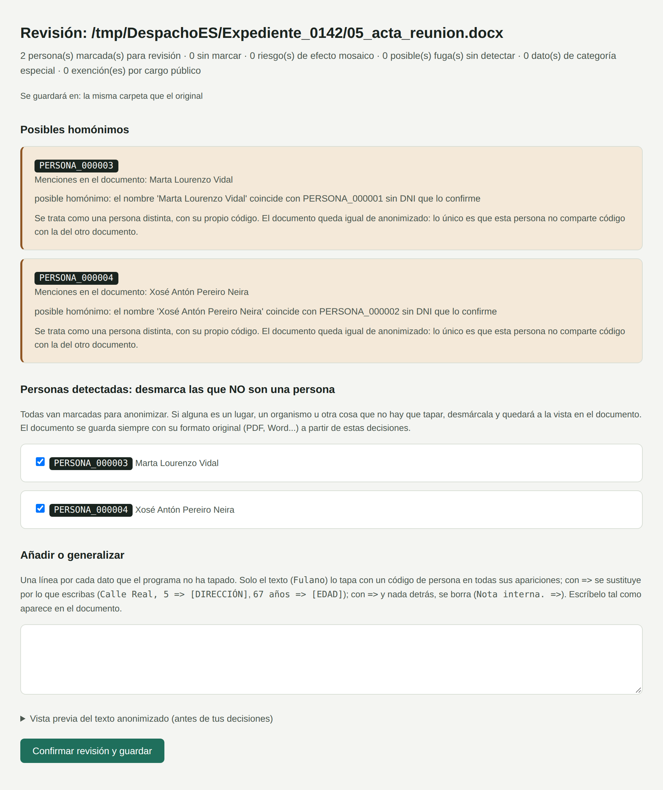
No hay nada que decidir: un posible homónimo queda siempre como persona distinta. El documento queda igual de anonimizado; lo único es que esa persona no comparte código con la del otro documento. El programa nunca une dos personas por tener el mismo nombre.
Todas las personas detectadas van marcadas para anonimizar. Si alguna es en realidad un lugar, un organismo u otra cosa que no hay que tapar, desmárcala y quedará a la vista en el documento.
Una línea por cada dato que el programa no haya tapado, escrito tal como aparece en el documento:
Fulano): lo tapa con un código de persona en todas sus apariciones.=> sustituto (Calle Real, 5 => [DIRECCIÓN]): lo sustituye por lo que escribas.=> y nada detrás (Nota interna. =>): lo borra.Los riesgos de efecto mosaico (combinaciones como profesión + lugar + edad que podrían identificar a alguien aunque no aparezca el nombre) NO se corrigen automáticamente: si hay que generalizar algún dato, hazlo aquí, por ejemplo cirujano cardiovascular del hospital de A Ponte, de 52 años => un profesional sanitario.
Arriba del todo, la pantalla puede mostrar avisos de una red de seguridad final: el programa vuelve a escanear el texto ya anonimizado por si queda algún patrón que todavía parezca un dato personal (por ejemplo, un nombre en formato «Apellidos, Nombre» sin redactar, o un número suelto de 7 a 9 dígitos). No redacta nada por sí misma: solo avisa, para que lo revises. Los avisos de confianza baja (muchos serán instituciones o lugares, no personas) se recogen en un desplegable de «revisiones opcionales».
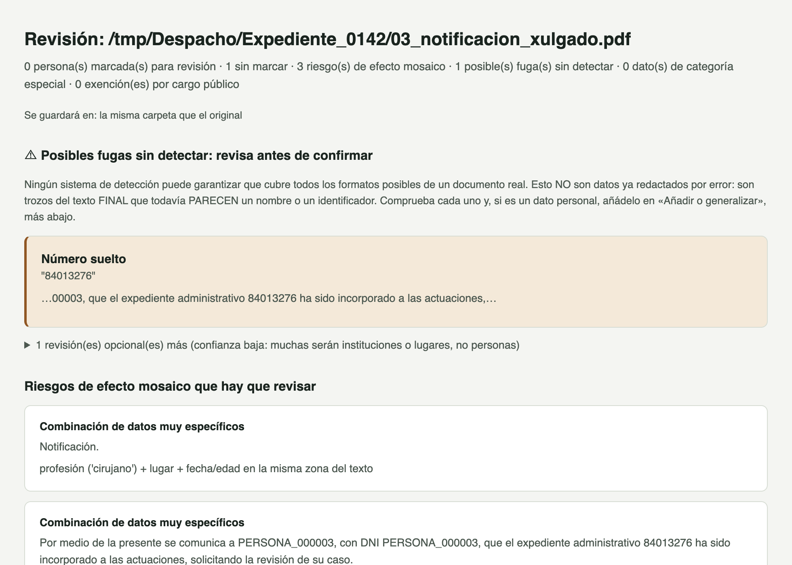
Ningún sistema de detección puede garantizar que cubre todos los formatos posibles de un documento real: estos avisos no son datos ya redactados por error, son trozos del texto final que todavía PARECEN un nombre o un identificador. Comprueba cada uno y, si es un dato personal, añádelo en «Añadir o generalizar». También aparece en el resumen del modo automático («⚠ N posible(s) fuga(s) sin detectar») y en la salida de la línea de órdenes.
Al pulsar «Confirmar revisión y guardar»:
.anonimizado antes de la extensión. Por ejemplo, declaracion.txt → declaracion.anonimizado.txt. Los .docx, .odt y .pdf, las imágenes y los .zip conservan su formato y su extensión originales (sección 11).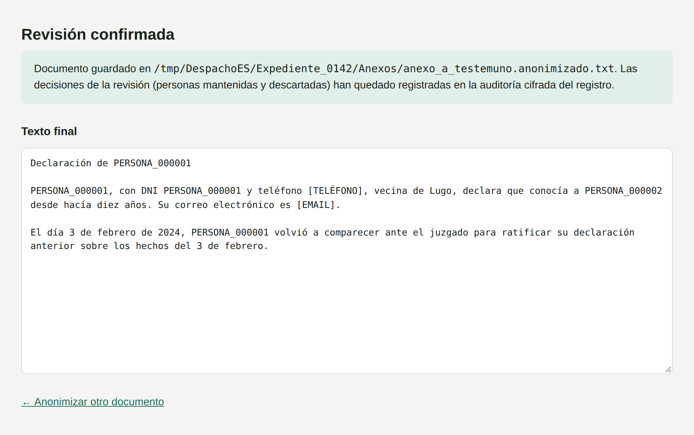
Si cierras el programa o reinicias el ordenador antes de confirmar una revisión, no se pierde: vuelve a abrir el programa, escribe la misma carpeta de registro en el campo «Ver revisiones pendientes de otra carpeta de registro» y retómala exactamente donde la dejaste.
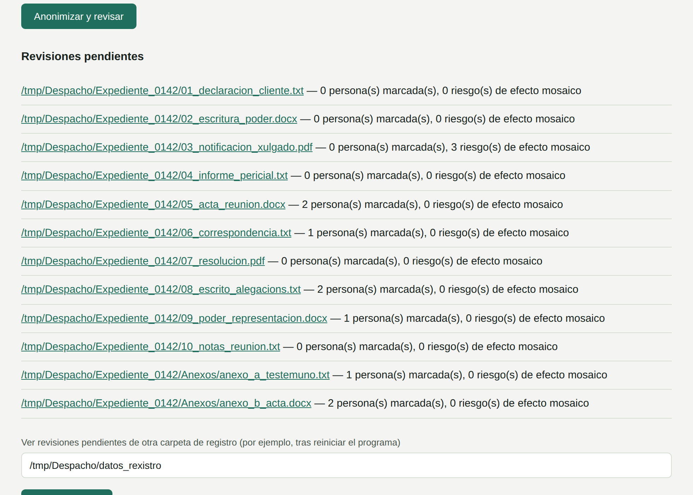
Cuando necesites consultar la identidad real detrás de un código (por ejemplo, para presentar el documento original en un juzgado), usa el enlace «Reversión controlada de identidad» de la pantalla inicial. El formulario exige tres cosas: el código, un motivo (siempre obligatorio) y la contraseña de reversión.
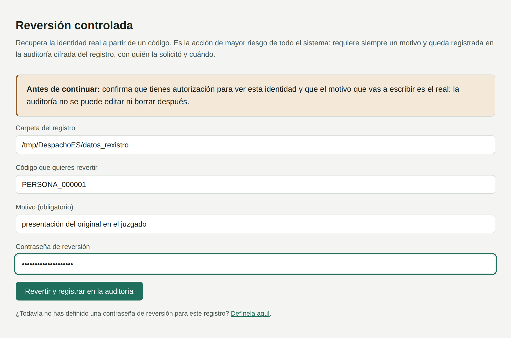
La reversión es la única función que devuelve datos identificativos reales. Escribe siempre el motivo real: queda grabado de forma permanente en la auditoría cifrada, junto con el usuario del sistema que la ejecutó y la fecha. No se puede editar ni borrar después.
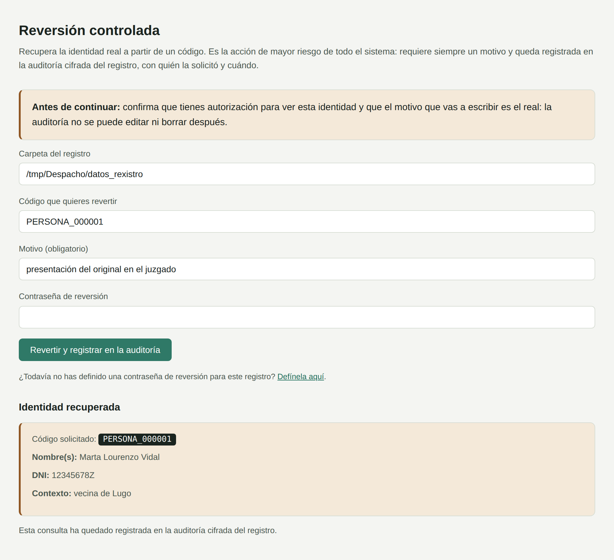
Es una segunda barrera, aparte de la clave de cifrado: evita que otra persona que comparta el ordenador abra el programa y revierta identidades reales sin conocerla. Se define una vez por cada registro en el enlace «Defínela aquí» del propio formulario (mínimo 8 caracteres; hay que escribirla dos veces, y para cambiarla más tarde se pide la actual). Un intento con contraseña incorrecta no revela nada y queda registrado en la auditoría.
No es una capa de cifrado adicional: quien tenga acceso al archivo clave.key (o al llavero del sistema) y al archivo rexistro.enc puede descifrar las identidades directamente, sin conocer esta contraseña. Por eso sigue siendo imprescindible guardar bien esos dos elementos por separado.
La reversión requiere conocer de antemano el código que se consulta. Cuando lo que necesitas es revisar un expediente entero de una vez (por ejemplo, para una auditoría interna), usa el enlace «Listado completo de correspondencias» de la pantalla inicial. Muestra en una sola tabla todos los códigos del registro con sus nombres, DNI, contexto y fecha de creación.
Esta pantalla requiere exactamente lo mismo que el formulario de reversión (motivo obligatorio y contraseña de reversión) más una casilla adicional de confirmación explícita, porque expone de golpe TODAS las identidades reales del registro, no una sola. Queda registrada en la auditoría con una acción distinta de la reversión individual (listado_completo), con el alcance exacto de lo que se vio. Si el registro tiene muchas personas, el listado se pagina de 200 en 200; cada página vuelve a pedir la contraseña y queda auditada aparte.
En registros antiguos, un código que ya no aparece como fila propia (porque se fusionó en otro con versiones anteriores del programa) se sigue viendo en la columna «Códigos fusionados en este» del código con el que quedó, así que ningún código antiguo de un documento viejo desaparece del listado.
Debajo de la tabla hay un botón «Generar PDF confidencial». El PDF lleva el listado entero, en horizontal, con el motivo, quién lo generó y la fecha en la cabecera, un aviso de extrema sensibilidad y la marca de agua «CONFIDENCIAL» en todas las páginas. Para generarlo se pide de nuevo la contraseña de reversión y una casilla que confirma que entiendes que es un documento de extrema sensibilidad; la generación queda en la auditoría como listado completo «XERADO PDF CONFIDENCIAL».
Fuera de contexto pierde valor, pero junto con los documentos anonimizados permite revertir el anonimato. No lo envíes por correo, no lo dejes en una carpeta compartida o sincronizada con la nube y destrúyelo cuando ya no haga falta.
Cuando el documento original es un .docx o un .odt, el archivo anonimizado mantiene la misma maquetación: alineación, listas, tablas y estilos de texto (negrita, cursiva) por separado dentro de cada párrafo.
Un .pdf también mantiene su formato Y su extensión. Funciona igual con PDF con texto normal y con PDF escaneados: los datos se eliminan de verdad del documento (no quedan «debajo» de un recuadro blanco) y se sustituyen por el código correspondiente, manteniendo el aspecto visual del original:
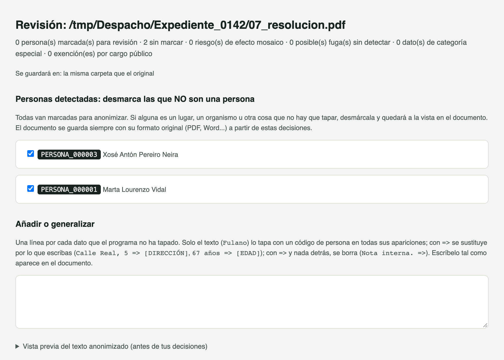
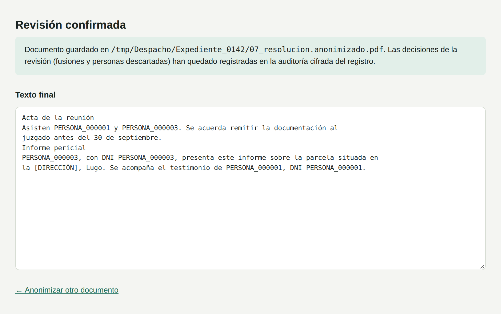
Una imagen suelta (.jpg, .png, .tif, .bmp, .webp, .gif; por ejemplo, la foto de un documento) se trata como una página escaneada: el programa lee el texto con OCR, tapa los datos y guarda una imagen nueva en el mismo formato y con la misma resolución. Los metadatos de la foto (ubicación GPS, autor, modelo de cámara) no se copian. Las fotos HEIC del iPhone no se admiten: conviértelas antes a JPG.
Si el archivo que indicas en la pantalla inicial es un .zip (por ejemplo, un expediente completo con varios documentos y planos), el sistema anonimiza cada archivo soportado que contiene (.pdf, .docx, .odt, .txt e imágenes) manteniendo la estructura de carpetas y el formato y extensión originales de cada uno, y genera un nuevo .anonimizado.zip. Los nombres de las carpetas de dentro del zip también se anonimizan, por si alguna lleva el nombre de una persona. Los archivos que no se pueden analizar (planos CAD, fotos HEIC…) NO se incluyen en el zip de salida, para no arriesgar que quede algo sin revisar: quedan listados aparte como «omitidos». Los documentos muy largos (cientos de páginas) se procesan sin problema, en trozos internos que no te afectan como usuario.
| Pregunta | Respuesta |
|---|---|
| ¿Dónde exactamente se guarda el archivo anonimizado? | En la misma carpeta que el original, añadiendo .anonimizado al nombre (ver sección 08). |
| ¿Puedo cambiar la carpeta de salida? | Sí, con el campo «Carpeta de salida» de la pantalla inicial (sección 02). El NOMBRE del archivo sigue la regla fija (<nombre>.anonimizado.<extensión>) en cualquier caso. |
| ¿Qué pasa si anonimizo el mismo documento dos veces? | Se sobrescribe el archivo .anonimizado anterior; el registro no crea códigos duplicados para las mismas personas gracias a la coherencia por DNI. |
| ¿Puedo usar carpetas de registro distintas para casos distintos? | Sí, y es recomendable: así los códigos de un caso no se mezclan con los de otro. |
| ¿Cómo sé si un documento lleva OCR o lectura directa? | No hace falta indicarlo: se detecta automáticamente página a página dentro de un PDF. |
| ¿Puedo anonimizar varios documentos de una carpeta de una vez? | Sí (secciones 04 y 06): indica la carpeta en lugar de un archivo. En modo revisión, cada documento tiene su propia revisión humana antes de guardarse. |
| Un archivo de la carpeta falla: ¿pierdo el resto? | No. El lote sigue con el resto y al final se listan los fallos con su motivo (sección 05). |
| He empezado un lote largo y quiero parar. ¿Qué hago? | Pulsa «Cancelar» en la pantalla de progreso: termina el archivo en curso y no empieza ninguno más; lo que ya estaba hecho queda hecho (sección 05). |
| ¿Por qué no se abre ningún diálogo al pulsar «Elegir archivo…»? | Comprueba que no haya otra ventana del sistema ya abierta detrás: el diálogo nativo a veces aparece detrás de la ventana del programa la primera vez. Siempre puedes escribir la ruta a mano. |
| ¿Puedo cambiar el idioma? | Sí, con los botones «Castellano | Galego» de la pantalla inicial. Se recuerda al cerrar el programa. El título de la ventana cambia la próxima vez que lo abras. |
| ¿Dónde están mis datos en Windows? | En la versión de la Microsoft Store, en Documentos\Anonimizador: datos_rexistro (registros cifrados), preferencias.json (idioma) y anonimizador.log (registro de errores). La clave que cifra los registros está en el Administrador de credenciales de Windows. Nada de esto se borra al actualizar ni al desinstalar el programa: sin el registro y su clave no se podría revertir ningún código. Si tu carpeta Documentos se sincroniza con OneDrive, los registros también se copian a la nube, pero cifrados (la clave no está en esa carpeta). Si antes usabas el instalador clásico, la primera vez se copia tu registro a esta carpeta (el original no se toca) y la pantalla de inicio te lo avisa.Con el instalador clásico, los mismos archivos están en %LOCALAPPDATA%\Anonimizador, y el desinstalador pregunta antes de borrar los registros. |
| ¿Puedo ver todas las correspondencias de un caso de una vez? | Sí, con el enlace «Listado completo de correspondencias» de la pantalla inicial (sección 10). Requiere motivo y contraseña como la reversión, más una confirmación explícita, y queda registrado como acceso masivo. |